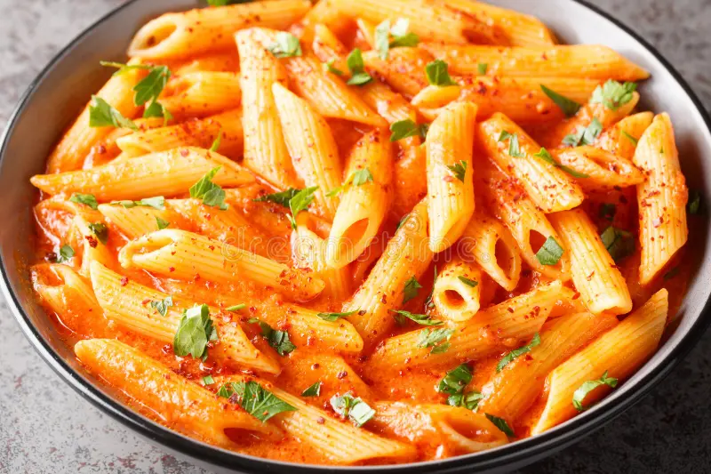

Pasta Recipe

Ingredients
- 200 grams pasta
- 2 tablespoons olive oil
- 1 onion, finely chopped
- 2 garlic cloves, minced
- 1 can (400 grams) diced tomatoes
- 1/2 cup heavy cream
- 1 cup grated Parmesan cheese
- 1 teaspoon dried basil
- 1 teaspoon dried oregano
- Salt and black pepper to taste
- Fresh basil for garnish
Instructions
- Cook the pasta according to package instructions. Drain and set aside.
- In a large pan, heat the olive oil over medium heat. Add the chopped onion and garlic, and sauté until softened.
- Add the diced tomatoes and cook for 5 minutes, allowing the sauce to thicken slightly.
- Stir in the heavy cream, Parmesan cheese, dried basil, and dried oregano. Cook for another 2-3 minutes, stirring constantly.
- Season with salt and black pepper to taste.
- Add the cooked pasta to the sauce and toss to coat evenly.
- Serve hot, garnished with fresh basil and extra Parmesan cheese if desired.